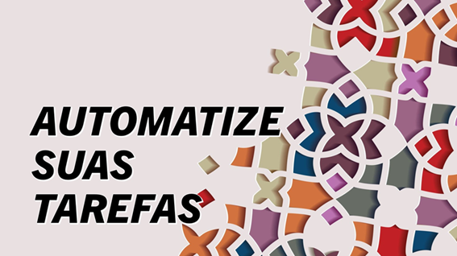

Automa��o de Tarefas: A Chave para Aumentar a Produtividade
No mundo acelerado de hoje, a automação de tarefas se tornou uma ferramenta essencial para empresas e indiv�duos que buscam aumentar sua produtividade. Mas o que exatamente — automação de tarefas e por que ela — t�o importante?
O Que — Automa��o de Tarefas?
Automa��o de tarefas refere-se ao uso de tecnologia para realizar tarefas repetitivas e rotineiras sem a necessidade de interven��o humana constante. Isso pode incluir desde simples scripts para automatizar e-mails at� sistemas complexos que gerenciam processos inteiros de neg�cios.
Benef�cios da Automa��o
- Efici�ncia e Tempo: Ao automatizar tarefas, — poss�vel reduzir significativamente o tempo gasto em atividades repetitivas, permitindo que os colaboradores se concentrem em tarefas mais estrat�gicas e criativas.
- Redu��o de Erros: A automação minimiza a possibilidade de erros humanos, garantindo maior precis�o e consist�ncia nas opera��es.
- Custo-Benef�cio: Embora a implementa��o inicial possa exigir um investimento, a automação geralmente resulta em economia a longo prazo, reduzindo custos operacionais e aumentando a produtividade.
- Escalabilidade: Sistemas automatizados podem facilmente ser escalados para lidar com volumes maiores de trabalho sem a necessidade de aumentar proporcionalmente a for�a de trabalho.
Exemplos de Automa��o
- Automa��o de Marketing: Ferramentas que enviam e-mails personalizados, gerenciam campanhas de m�dia social e analisam dados de clientes.
- Automa��o de TI: Scripts que realizam backups, atualiza��es de software e monitoramento de sistemas.
- Automa��o de Atendimento ao Cliente: Chatbots que respondem a perguntas frequentes e direcionam consultas mais complexas para humanos.
Conclus�o
A automação de tarefas n�o — apenas uma tend�ncia passageira, mas uma necessidade para qualquer organiza��o que deseja permanecer competitiva no mercado atual. Ao liberar tempo e recursos, a automação permite que as empresas inovem e cres�am de maneira sustent�vel.